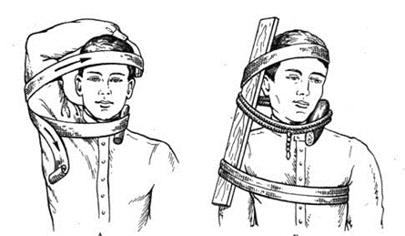
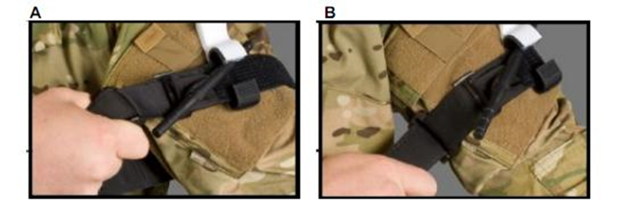
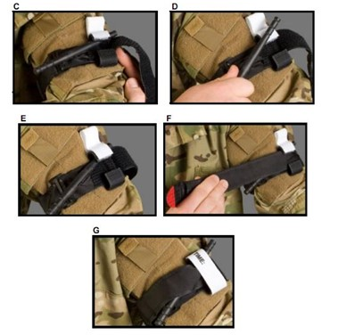

Якщо поранений не може переміститися в безпечне місце сам і бойова ситуація дозволяє надати йому допомогу, в такому випадку необхідно провести швидку оцінку стану потерпілого, зупинити кровотечу з ран на кінцівках, що загрожують життю пораненого і перейти разом з ним в безпечну зону.
Для цього:
Безпечне положення на боці дозволяє крові, слизу і блювотним масам витікати з рота пораненого, не перекриваючи дихальні шляхи. Воно також не дає язику запасти і перекрити доступ повітрю. Повертати пораненого на бік можна в напрямку до себе і від себе. До себе повертати більш зручно і доцільно так як ви весь час контролюєте пораненого. Щоб покласти пораненого на бік в напрямку до себе:
Пам'ятайте! У секторі обстрілу слід в максимально стислий час надати тільки той мінімальний обсяг допомоги, який дозволить пораненому дожити до закінчення бою або забезпечить його життєздатність під час транспортування в укриття.
Своєчасно надана перша допомога – ще одне врятоване життя!
У секторі обстрілу слід зупиняти виключно небезпечну для життя кровотечу (інтенсивне витікання крові, видима калюжа крові).
Причиною смерті в перші секунди після поранення може стати попадання повітря в вену (повітряна емболія).
Пам'ятайте! Тканина, притиснута до рани, швидко просочиться кров’ю і стане герметичною для повітря.
Притиснутий до рани палець, також припинить надходження повітря в ушкоджену вену, але з набагато меншим ефектом.
Поранення в шию. Правила накладання джгута в секторі обстрілу:
Такий джгут можна не знімати протягом декількох діб, на відміну від джгута, накладеного через підняту руку.
Ситуації, при яких не слід надавати допомогу пораненому, перебуваючи в зоні вогневого впливу противника:
При поранені негайно оцінити кровотечу:
незначна кровотеча - застосувати прямий тиск на рану, підняти кінцівку;
значна кровотеча – якщо бій триває, накласти джгут CAT, продовжувати бій та спробувати переміститися в укриття, там зачекати на евакуацію до місця збору поранених. В укритті затампонувати рану гемостатичним або звичайним бинтом, накласти ізраїльський бандаж, тоді послабити джгут, проте не знімати його з кінцівки.
Якщо кровотеча зупинилася, переміститися до місця надання медичної допомоги. Якщо кровотеча знову відновилася – затягнути джгут. Якщо відчувається запаморочення – перевернутися на живіт для запобігання асфіксії від западання язика при втраті свідомості.
Провідною причиною смерті на полі бою, якої можна запобігти, є кровотеча з тулуба, ран шиї, кінцівок, тому:
пряме затискання місця поранення є пріоритетним і найефективнішим методом зупинки кровотечі.
Кровотеча з кінцівки, як правило, може бути зупинена шляхом накладення тиснутої пов’язки, тугої тампонади рани, застосування методу ручного притиснення, підняттям пошкодженої кінцівки. Для зупинки кровотечі застосовувати прямий тиск на рану протягом 5 хвилин. Не виймайте сторонні тіла з рани.
Ізраїльська компресійна пов’язка – високотехнологічний засіб, який дозволяє зупинити кровотечу за рахунок комбінації різних механізмів тиску на рану.
Якщо у пораненого спостерігається кровотеча з кінцівки і прямий тиск не може її зупинити, необхідно накласти кровоспинний джгут.
Необхідно завжди пам’ятати, що кровоспинний джгут являє собою небезпечний (в плані можливості втрати або паралічу кінцівки) і дуже болісний для пораненого засіб. Тому його використання повинно обмежуватися випадками, коли мова йде про можливість загибелі постраждалого в результаті крововтрати від критичної кровотечі.
Джгут повинен застосовуватися тільки:
Пам'ятка. Тактика дій в секторі обстрілу, коли біля голови і тулуба пораненого видна калюжа крові:
Перший варіант – поранення голови: виявити рану і надати допомогу без зняття каски неможливо. Дії: повернути на живіт і залишити до закінчення бою або транспортувати в укриття в положенні «лежачи на животі».
Другий варіант – поранення шиї: можна побачити місце поранення і надати мінімальний обсяг допомоги. Дії: притиснути пальцем рану на шиї, накласти через тампон джгут, повернути на живіт і залишити до закінчення бою або транспортувати в укриття в положенні «лежачи на животі».
Третій варіант – поранення грудної клітини: виявити рану і надати допомогу без зняття бронежилета неможливо. Дії: повернути на живіт і залишити до закінчення бою або транспортувати в укриття в положенні «лежачи на животі».
Пояснення. Враховуючи, що при важких пораненнях можлива раптова втрата свідомості, бійця біля голови і тулуба якого є калюжа крові, слід швидко повернути на живіт і в такому положенні залишити його до закінчення бою або транспортувати в укриття.
В сучасну тактичну аптечку IFAK входить так званий C.A.T. турнікет (Combat Application Tourniquet) виробництва США або його китайські та тепер вже і українські аналоги (наприклад, турнікет СІЧ).
На даному етапі далеко не всі підрозділи збройних сил забезпечені аптечками IFAK або принаймні C.A.T. турнікетами. Тому також використовують гумовий кровоспинний джгут Есмарха-Лангенбека.
Кожному бійцю бажано мати 2 джгути (турнікети) – один в аптечці, інший – на амуніції, у однаковому місці, визначеному для всіх бійців підрозділу. Це дуже важливо, так як в умовах обстрілу на пошук прихованого турнікету може піти дорогоцінний час, а сам процес пошуку може наразити на небезпеку і пораненого, і рятувальника.
Загальні правила накладання джгутів.
Накладання Джгута Есмарха
Джгут Есмарха дуже легко і швидко псується під дією погодних умов та від зберігання в розтягнутому стані. Тому джгут, що був накручений на приклад автомату, не врятує від кровотечі, так як він розірветься в момент спроби його використання.
Накладання C.A.T. турнікету
Накладання джгута однією рукою. Джгут накладається однією рукою, як правило, коли його накладають в порядку самодопомоги на верхню кінцівку (плече або передпліччя).
 Пам'ятай! Якщо на пошкоджену стегнову артерію протягом 2 хвилин не накладено джгут, то поранений обов’язково загине від непоправної втрати крові.
Якщо на пошкоджені артерії плеча та передпліччя протягом 30-40 хвилин не накладено джгут, то поранений може загинути від непоправної втрати крові.
Якщо поранений в стані коми протягом 5-6 хвилин не буде повернутий на живіт, то він може загинути від западання язика і потрапляння блювотних мас у дихальні шляхи.